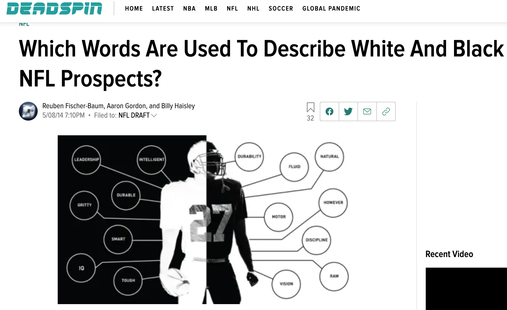
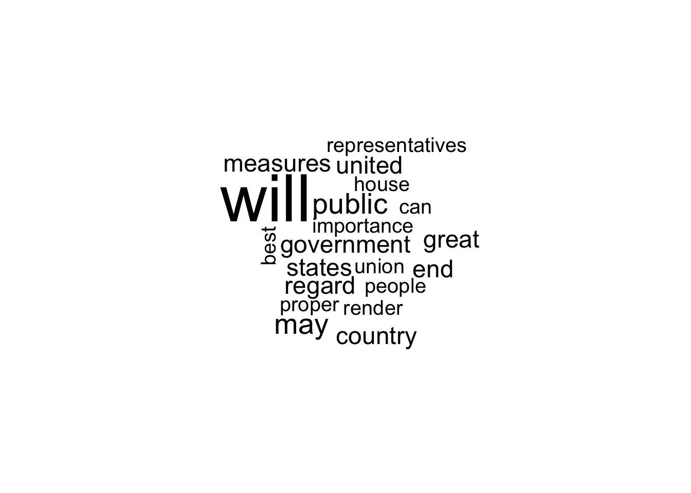

install.packages("sotu", dependencies = T)
install.packages("tm", dependencies = T)
install.packages("SnowballC", dependencies = T)
install.packages("wordcloud", dependencies = T)
install.packages("stringr", dependencies = T)11 Text as Data
Recall that we said, four primary goals of social science include:
- Describe and measure
- Has the U.S. population increased?
- Explain, evaluate, and recommend (study of causation)
- Does expanding Medicaid improve health outcomes?
- Predict
- Who will win the next election?
- Discover
- How do policies diffuse across states?
In this section, we start to explore the goal of discovery, seeing what we can learn from text as data.
11.1 Why text?
Words (can) matter. Patterns of word usage can be suggestive of deeper divides.

Article from Deadspin

Article from NY Times
Why Use R to analyze text?
- Assist in reading large amounts of text


- Efficiently summarize text through quantifying text attributes
- (Can) remove some subjectivity in coding text, allow to discover aspects of text unknown a priori
11.2 R Packages for text
Packages are like apps on your phone. They give you additional functionality. To use the tools in a package you first have to install it.
After you install it, just like on a phone, anytime you want to use the app, you need to open it. In R, we do that with library().
library(sotu)
library(tm)
library(SnowballC)
library(wordcloud)
library(stringr)11.3 Application: State of the Union
For a video explainer of the code for the State of the Union application on pre-processing text and dictionary analysis, see below. (Via youtube, you can speed up the playback to 1.5 or 2x speed.)
The sotu package includes a dataset with the text of every U.S. State of the Union speech. It also includes second dataset with information about the speech. When datasets are stored in a package, you can add them to your environment through the data() function.
data(sotu_meta)
data(sotu_text)We are going to “bind” these together into a new dataframe. That way, the sotu_text is a variable inside of our speeches dataframe.
speeches <- cbind(sotu_meta, sotu_text)
names(speeches)[1] "X" "president" "year" "years_active" "party"
[6] "sotu_type" "sotu_text" 11.3.1 Cleaning Text
Note that when working with raw text data, we usually do want our variables to be character variables and not factor variables. Here, every cell is not a category. Instead, it is a speech!
class(speeches$sotu_text)[1] "character"Text is messy data. We may want to spruce it up a bit by removing some of the non-essential characters and words, and moving everything to lowercase.
## Example of speech
speeches$sotu_text[1][1] "Fellow-Citizens of the Senate and House of Representatives: \n\nI embrace with great satisfaction the opportunity which now presents itself of congratulating you on the present favorable prospects of our public affairs. The recent accession of the important state of North Carolina to the Constitution of the United States (of which official information has been received), the rising credit and respectability of our country, the general and increasing good will toward the government of the Union, and the concord, peace, and plenty with which we are blessed are circumstances auspicious in an eminent degree to our national prosperity.\n\nIn resuming your consultations for the general good you can not but derive encouragement from the reflection that the measures of the last session have been as satisfactory to your constituents as the novelty and difficulty of the work allowed you to hope. Still further to realize their expectations and to secure the blessings which a gracious Providence has placed within our reach will in the course of the present important session call for the cool and deliberate exertion of your patriotism, firmness, and wisdom.\n\nAmong the many interesting objects which will engage your attention that of providing for the common defense will merit particular regard. To be prepared for war is one of the most effectual means of preserving peace.\n\nA free people ought not only to be armed, but disciplined; to which end a uniform and well-digested plan is requisite; and their safety and interest require that they should promote such manufactories as tend to render them independent of others for essential, particularly military, supplies.\n\nThe proper establishment of the troops which may be deemed indispensable will be entitled to mature consideration. In the arrangements which may be made respecting it it will be of importance to conciliate the comfortable support of the officers and soldiers with a due regard to economy.\n\nThere was reason to hope that the pacific measures adopted with regard to certain hostile tribes of Indians would have relieved the inhabitants of our southern and western frontiers from their depredations, but you will perceive from the information contained in the papers which I shall direct to be laid before you (comprehending a communication from the Commonwealth of Virginia) that we ought to be prepared to afford protection to those parts of the Union, and, if necessary, to punish aggressors.\n\nThe interests of the United States require that our intercourse with other nations should be facilitated by such provisions as will enable me to fulfill my duty in that respect in the manner which circumstances may render most conducive to the public good, and to this end that the compensation to be made to the persons who may be employed should, according to the nature of their appointments, be defined by law, and a competent fund designated for defraying the expenses incident to the conduct of foreign affairs.\n\nVarious considerations also render it expedient that the terms on which foreigners may be admitted to the rights of citizens should be speedily ascertained by a uniform rule of naturalization.\n\nUniformity in the currency, weights, and measures of the United States is an object of great importance, and will, I am persuaded, be duly attended to.\n\nThe advancement of agriculture, commerce, and manufactures by all proper means will not, I trust, need recommendation; but I can not forbear intimating to you the expediency of giving effectual encouragement as well to the introduction of new and useful inventions from abroad as to the exertions of skill and genius in producing them at home, and of facilitating the intercourse between the distant parts of our country by a due attention to the post-office and post-roads.\n\nNor am I less persuaded that you will agree with me in opinion that there is nothing which can better deserve your patronage than the promotion of science and literature. Knowledge is in every country the surest basis of public happiness. In one in which the measures of government receive their impressions so immediately from the sense of the community as in ours it is proportionably essential.\n\nTo the security of a free constitution it contributes in various ways - by convincing those who are intrusted with the public administration that every valuable end of government is best answered by the enlightened confidence of the people, and by teaching the people themselves to know and to value their own rights; to discern and provide against invasions of them; to distinguish between oppression and the necessary exercise of lawful authority; between burthens proceeding from a disregard to their convenience and those resulting from the inevitable exigencies of society; to discriminate the spirit of liberty from that of licentiousness - cherishing the first, avoiding the last - and uniting a speedy but temperate vigilance against encroachments, with an inviolable respect to the laws.\n\nWhether this desirable object will be best promoted by affording aids to seminaries of learning already established, by the institution of a national university, or by any other expedients will be well worthy of a place in the deliberations of the legislature.\n\nGentlemen of the House of Representatives: \n\nI saw with peculiar pleasure at the close of the last session the resolution entered into by you expressive of your opinion that an adequate provision for the support of the public credit is a matter of high importance to the national honor and prosperity. In this sentiment I entirely concur; and to a perfect confidence in your best endeavors to devise such a provision as will be truly with the end I add an equal reliance on the cheerful cooperation of the other branch of the legislature.\n\nIt would be superfluous to specify inducements to a measure in which the character and interests of the United States are so obviously so deeply concerned, and which has received so explicit a sanction from your declaration. \n\nGentlemen of the Senate and House of Representatives: \n\nI have directed the proper officers to lay before you, respectively, such papers and estimates as regard the affairs particularly recommended to your consideration, and necessary to convey to you that information of the state of the Union which it is my duty to afford.\n\nThe welfare of our country is the great object to which our cares and efforts ought to be directed, and I shall derive great satisfaction from a cooperation with you in the pleasing though arduous task of insuring to our fellow citizens the blessings which they have a right to expect from a free, efficient, and equal government. GEORGE WASHINGTON\n"## clean text
speeches$sotu_text <- tolower(speeches$sotu_text)
speeches$sotu_text <- stripWhitespace(speeches$sotu_text)
speeches$sotu_text <- removeWords(speeches$sotu_text, stopwords(kind="en"))
speeches$sotu_text <- removePunctuation(speeches$sotu_text)
speeches$sotu_text <- removeNumbers(speeches$sotu_text)
#speeches$sotu_text <- stemDocument(speeches$sotu_text) # we will hold offNote: What you might consider non-essential could differ depending on your application. Maybe you want to keep numbers in your text, for example.
11.3.2 Preparing a Corpus
## turn text into corpus
sotu.corpus <- Corpus(VectorSource(speeches$sotu_text))
## turn into Document-Term-Matrix
sotu.dtm <- DocumentTermMatrix(sotu.corpus)## preview
inspect(sotu.dtm[,10:20])<<DocumentTermMatrix (documents: 240, terms: 11)>>
Non-/sparse entries: 1404/1236
Sparsity : 47%
Maximal term length: 11
Weighting : term frequency (tf)
Sample :
Terms
Docs affairs afford affording agree agriculture aids allowed already also
113 2 5 0 0 7 0 1 16 23
117 3 9 1 0 2 1 8 17 23
119 2 2 0 2 8 2 3 21 16
124 8 1 0 3 6 3 2 13 25
158 8 5 0 1 22 5 2 25 44
188 6 1 0 3 2 0 0 13 94
190 6 7 0 0 6 0 1 23 89
197 2 2 0 0 8 0 2 11 44
199 4 8 0 0 9 0 1 23 82
201 8 3 0 0 9 0 4 11 72
Terms
Docs among
113 12
117 23
119 11
124 10
158 12
188 6
190 8
197 9
199 14
201 1711.3.3 Word Frequency
Convert the “Document-Term-Matrix” into a matrix using as.matrix()
sotu.dtm.mat <- as.matrix(sotu.dtm)
## Most frequent words
head(sort(sotu.dtm.mat[1,], decreasing=T), n=10) will may public country end government great
14 5 5 4 4 4 4
measures regard states
4 4 4 head(sort(sotu.dtm.mat[236,], decreasing=T), n=10) america now people will just work american world
28 27 27 26 25 22 22 22
make can
20 19 Note: these are somewhat generic words.
Word Cloud
wordcloud(words=names(sotu.dtm.mat[1,]),
freq=sotu.dtm.mat[1,], max.words = 20)
11.4 Word Importance
We use tf-idf (term frequency - inverse document frequency) as a way to pull out uniquely important/relevant words for a given character.
- Relative frequency of a term inversely weighted by the number of documents in which the term appears.
- Functionally, if everyone uses the word “know,” then it’s not very important for distinguishing characters/documents from each other.
- We want words that a speech used frequently, that other speeches use less frequently
## words uniquely important to a character
sotu.tfidf <- weightTfIdf(sotu.dtm)
## convert to matrix
sotu.tfidf.mat <- as.matrix(sotu.tfidf)We can summarize the uniquely relevant words for each speech
Gw1790.tfidf <-head(sort(sotu.tfidf.mat[1,], decreasing=T), n=8)
BO2016.tfidf <-head(sort(sotu.tfidf.mat[236,], decreasing=T), n=8)Gw1790.tfidf intimating licentiousness discern inviolable derive
0.01532343 0.01532343 0.01338545 0.01225180 0.01181748
persuaded cherishing comprehending
0.01181748 0.01082357 0.01082357 barplot(Gw1790.tfidf, cex.axis=.7,
cex.names=.7,
main= "Most `Important' 1790 SOTU Words (tf-idf)",
horiz = T, las=2)barplot(BO2016.tfidf,
cex.names=.7, cex.axis=.7,
main= "Most `Important' 2016 SOTU Words (tf-idf)",
horiz=T, las=2)11.5 Additional Descriptive Statistics
Are the length of speeches changing? The nchar() function tells you the number of characters in a “string.”
speeches$speechlength <- nchar(speeches$sotu_text)Let’s plot the length of speeches over time and annotate with informative colors and labels.
Is the length of speeches changing?
plot(x=1:length(speeches$speechlength), y= speeches$speechlength,
pch=15,
xaxt="n",
xlab="",
ylab = "Number of Characters")
## add x axis
axis(1, 1:length(speeches$speechlength), labels=speeches$year, las=3, cex.axis=.7)
We can add color to distinguish written vs. spoken speeches
speechcolor <- ifelse(speeches$sotu_type == "written", "black", "green3")
plot(x=1:length(speeches$speechlength), y= speeches$speechlength,
xaxt="n", pch=15,
xlab="",
ylab = "Number of Characters",
col = speechcolor)
## add x axis
axis(1, 1:length(speeches$speechlength), labels=speeches$year, las=3, cex.axis=.7)
## add legend
legend("topleft", c("spoken", "written"),
pch=15,
col=c("green3", "black"), bty="n")
11.5.1 Dictionary Analysis
We can characterize the content of speeches in different ways. For example, we can see if speeches mention specific words, such as `“terrorism.”
- The function
grepl()lets you search for a pattern of text in a character string - The function
str_detect()works similarly with the opposite order of inputs
speeches$terrorism <- ifelse(grepl("terror", speeches$sotu_text), 1,0)
speeches$terrorism2 <- ifelse(str_detect(speeches$sotu_text,"terror"), 1,0)sort(tapply(speeches$terrorism, speeches$president, sum),
decreasing=T)[1:10] George W. Bush William J. Clinton Barack Obama
8 8 7
Ronald Reagan Donald Trump Franklin D. Roosevelt
6 4 4
Andrew Jackson Chester A. Arthur Grover Cleveland
2 2 2
Harry S Truman
2 We can characterize the content of speeches in different ways. For example, we can see if speeches mention specific words, such as “terrorism.”
- The function
str_count()counts the number of times a piece of text appears in a character string
speeches$terrorismcount <- str_count(speeches$sotu_text, "terror")sort(tapply(speeches$terrorismcount, speeches$president, sum),
decreasing=T)[1:10] George W. Bush Barack Obama William J. Clinton
171 37 29
Donald Trump Ronald Reagan Franklin D. Roosevelt
24 10 6
Lyndon B. Johnson Harry S Truman Jimmy Carter
5 3 3
Andrew Jackson
2 We can add multiple words with the | operator. This is often called a “dictionary analysis.”
speeches$warcount <- str_count(speeches$sotu_text,
"terror|war|military|drone")
sort(tapply(speeches$warcount, speeches$president, sum), decreasing=T)[1:10] Harry S Truman Theodore Roosevelt Franklin D. Roosevelt
554 481 441
James K. Polk Jimmy Carter Dwight D. Eisenhower
390 348 332
William McKinley George W. Bush Grover Cleveland
324 323 257
Ulysses S. Grant
233 What are possible limitations of this analysis?
11.6 Application Programming Interfaces
Application programming interfaces (APIs) are tools that allow you to search a large database to extract specific types of information. Social scientists often work with APIs to extract data from social media platforms, government agencies (e.g., U.S. Census), and news sites, among others.
Organizations that develop these APIs can control what types of information researchers can access. Often, they set limits on the types and quantities of information someone can collect. Companies also often monitor who accesses the information by requiring people to sign up for access, apply for access, and/or pay for access.
Example: Census API As an example of an API, the U.S. Census has an API that allows researchers to extract nicely formatted data summaries of different geographic units (e.g., all zip codes in the U.S.).
- Researchers can sign up here for an API “key” which allows the organization to monitor who is accessing what information.
Researchers Kyle Walker and Matt Herman have made an R package that makes working with the API easier.
- Example:
tidycensusfound here allows you to search Census data by providing the variables you want to extract

APIs can make a social scientist’s life easier by providing an efficient way to collect data. Without an API, researchers might have to resort to manually extracting information from online or writing an ad hoc set of code to “scrape” the information off of websites. This can be time consuming, against an organization or company’s policy, or even impossible in some cases. APIs are powerful and efficient.
However, because researchers cannot control the API, the downside is at any given time, an organization could change or remove API access. Researchers might also not have the full details of what information is included in the API, potentially leading to biased conclusions from the data. APIs are great, but we should use them with caution.
Because the APIs require you to sign up for access (giving away your information), this course will not require that you gain access or use the APIs
11.6.1 Twitter API v1
Let’s try an example working with a Twitter API. To use this version of the Twitter API with R, you need
- To create a Twitter account (you don’t need to tweet from the account, just need an account)
- An internet connection
- To install the
rtweetpackage
install.packages("rtweet")Let’s open the package
library(rtweet)The API sets guidelines about what and how much information a person can collect from Twitter over a particular duration of time. With the version of the API we are working with, we can collect a few thousand of the most recent tweets of any public user and search recent tweets (past few days) on Twitter that include keywords.
- Twitter has other versions of the API that academic researchers can apply to for broader access, including access to older tweets (e.g., if you wanted to study tweets during the 2020 election). Researchers have developed a separate R package for working with this broader API.
11.6.1.1 Searching tweets for keywords.
The first time you use a function from rtweet, R will prompt you to authenticate and authorize an “app” through your Twitter account. Essentially, a web browser on your computer should automatically open to a Twitter landing page asking you to hit the “authorize” button. Once you do this, then you should be able to return to R and work with the R functions. (This is why you need a Twitter account and an internet connection to work with this package.)
We can use the search_tweets function to search recent tweets that contain keywords. We can specify the number of tweets to extract with the n argument. We can also filter tweets with additional arguments, such as by limiting tweets to English tweets or omitting retweets.
## simple keyword search
taylortweets <-search_tweets("taylorswift", n=1000)
## use ' ' to search for exact phrase
worldcuptweets <-search_tweets('"world cup"', n=1000)
## use OR between words to search for tweets with at least one of the key words
f1tweets <- search_tweets('"daniel ricciardo" OR "lando norris"', n=500)
## just keep a space between words, no extra quotes to search for tweets that include both words somewhere
bachtweets <- search_tweets("bachelorette gabby", n=400)
## limit tweets to include only english tweets
coronatweets <- search_tweets("coronavirus OR COVID", n=200, lang = "en")
## omit retweets, may affect total n extracted
scotustweets <- search_tweets("scotus", n=200, include_rts = FALSE)The resulting object we created with the first search, taylortweets, is a dataframe and includes the 1000 tweets we requested to extract along with 90 variables of information about those tweets. A few notable variables:
screen_name: the screen name of the twitter usertext: the text of the tweetis_retweet: an indiactor TRUE or FALSE indicating if the tweet was a retweetfavorite_count: the number of times the tweet was favorited (liked)followers_count: number of followers the user hasfriends_count: number of users that the tweeter followsstatuses_count: the number of tweets from the userverified: an indicator TRUE or FALSE indicating if the user is verifiedlang: language of the tweet
11.6.1.2 Extracting user timeline
Here is an example of extracting tweets from a particular user. You cane extract up to 3200 recent tweets of a specified public user. If you try to extract tweets from several users at once, you might hit a “rate limit” indicating that you requested more information than allowed over a particular period of time.
## extracting tweets from potus
bidentweets <- get_timeline("potus", n=3200)
## extracting tweets from potus
polleaders <- c("potus", "vp")
poltweets <- get_timeline(polleaders, n=3200)Similar to the keyword tweets, the object created will provide the text of the tweets and information about the reactions to the tweets.
11.6.2 Saving R Objects
After you extract an tweets from online, you may want to save them as a hard data file on your computer. This way if you close RStudio, you can recover the tweets without needing to extract new tweets from Twitter.
R allows you to save any R object as an .RData file that can be opened with the load() command. This is discussed on pg. 24 of QSS Chapter 1.
We can demonstrate this now by saving taylortweets as an RData object. It will automatically save to your working directory, but you can also add a subfolder or alternative file path.
save(taylortweets, file = "taylortweets.RData")Prior to saving the file, you could consider limiting the number of variables you want to save if you didn’t want to store 90 variables. Example of keeping only 5 variables:
taylortweets <- taylortweets[, c("user_id", "screen_name", "text", "created_at", "is_retweet")]
save(taylortweets, file = "taylortweets.RData")Then, you can load the file (if you happen to close R/RStudio, restart your computer, etc.) with the load command.
load("taylortweets.RData")11.7 Application: Sentiment Analysis
In this example we will conduct a sentiment analysis of tweets extracted through the Twitter API.
- You can use dataset provided on Canvas or extract your own tweets
- To extract your own, you need a Twitter account and
rtweetinstalled.
Using tweets in political science?
Research on Twitter is actually pretty common in the social sciences, including political science. Part of the reason for this is the access Twitter provides via API, which makes it an easier platform to study.
Below are some examples of uses of Twitter data in social science research.
- Scholars are often interested in characterizing the tone, such as incivility or toxicity, in online political discussions.
- They may also use Twitter as a mechanism to study interactions between the public and elected officials and other public figures, as well as studying how politicians use Twitter as a form of strategic communication.
- Political communications scholars have studied the extent to which journalists use Twitter to interpret public opinion, as well as study how media can control and set the agenda of what people discuss on Twitter.
When doing political science research on Twitter, we should be careful about how we generalize the results to other settings. There is some evidence from Bor and Peterson that those who demonstrate incivility in offline discussions carry that behavior to online settings, there are other ways that someone’s behavior on Twitter will not match their behavior in other settings or represent their underlying throughts or beliefs.


For a video explainer of the code in this section, see below. (Via youtube, you can speed up the playback to 1.5 or 2x speed.)
For this example, we need the rtweet and syuzhet packages.
install.packages("rtweet") # for extracting tweets
install.packages("syuzhet") # for late sentiment analysisIn R, we open the packages with library().
library(rtweet)
library(syuzhet)11.7.1 Searching tweets for keywords
We will first search recent tweets for keywords. The first time you use the package, it will open up an authentication browser asking you to “authorize” the Twitter app. This is giving you access to the API.
- See the details above in the course notes for the syntax of this function.
politicstweets <- search_tweets("political OR partisan", n=2000)
thanksgivingtweets <- search_tweets("thanksgiving", n=2000)After you create the tweets, you can save them as an RData file on your computer so that you don’t lose them when you close R.
save(politicstweets, file="politicstweets.RData")
save(thanksgivingtweets, file="thanksgivingtweets.RData")These can then be loaded back into R at anytime.
load("data/politicstweets.RData")
load("data/thanksgivingtweets.RData")load("politicstweets.RData")
load("thanksgivingtweets.RData")11.7.2 Sentiment Analysis Overview
Oftentimes, beyond characterizing the length or topic of a set of text, we might want to know the tone of the text. There are many ways to measure tone or “sentiment.” One approach extends what we did with dictionary analysis.
- Researchers have developed dictionaries of words that are typically associated with positive or negative sentiment. We will use the
bingdictionary. - Sometimes, researchers go so far as to create dictionaries for discrete emotions (e.g., happiness) or other types of measures, such as toxicity levels or hate speech.
- Using these pre-existing dictionaries, we can then count how many words in a body of text have positive vs. negative tone to summarize the sentiment of a document.
Like any dictionary analysis, there are limitations to this “bag of words” approach– looking at the words individually without considering the context in which they are mentioned.
11.7.3 Implementing sentiment analysis
The get_sentiment() function will calculate the net positive - negative score of a piece of text according to a specified dictionary. We can store this as a new variable.
politicstweets$sentiment <- get_sentiment(politicstweets$text,
method="bing")
thanksgivingtweets$sentiment <- get_sentiment(thanksgivingtweets$text,
method="bing")
## Example output
politicstweets$sentiment[1:10] [1] -2 -3 4 1 -7 -2 -3 -3 -4 0Let’s compare the sentiment of these sets of tweets to help answer the question: Should we talk about politics at Thanksgiving dinner?
We add a plotting concept: Plotting multiple plots.
## Set par
par(mfrow = c(1, 2)) # 1 row with 2 plots
## Plot just the first object
hist(politicstweets$sentiment,
xlab="Sentiment (bing score)",
main="Sentiment Scores for Politics Tweets",
cex.main=.7,
ylim = c(0, 800),
xlim = c(-8, 8),
border= F)
## Add lines for the mean sentiment
abline(v=mean(politicstweets$sentiment), lwd=2)
## Second plot
hist(thanksgivingtweets$sentiment,
xlab="Sentiment (bing score)",
main="Sentiment Scores for Thanksgiving Tweets",
cex.main = .7, col="pink",
ylim = c(0, 800),
xlim = c(-8, 8),
border= F)
abline(v=mean(thanksgivingtweets$sentiment), lwd=2)
11.7.4 Your Twitter Analysis
As mentioned above We can also search the most recent 3200 tweets of a given user.
Here we extract tweets from AOC’s Twitter account
aoctweets <- get_timeline("aoc", n=3200)As a challenge, conduct your own analysis of the congresswoman’s tweets. It could be a sentiment analysis, or you could use one or more tools from the previous sections on text analysis.